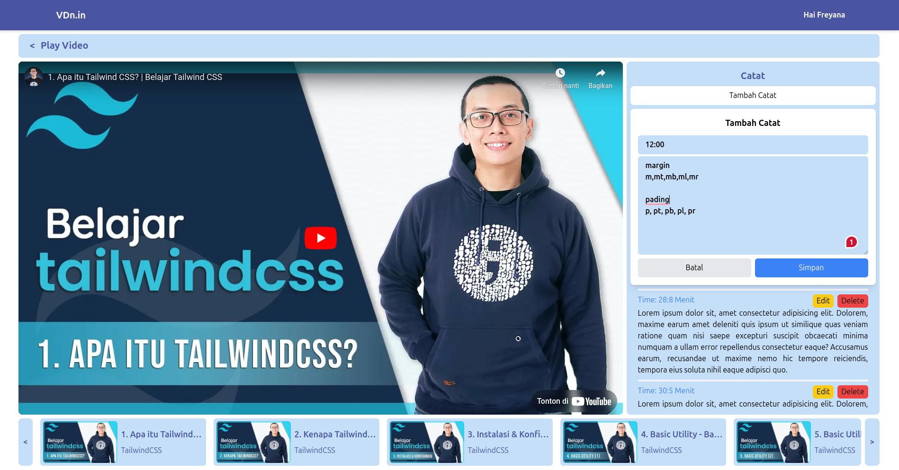
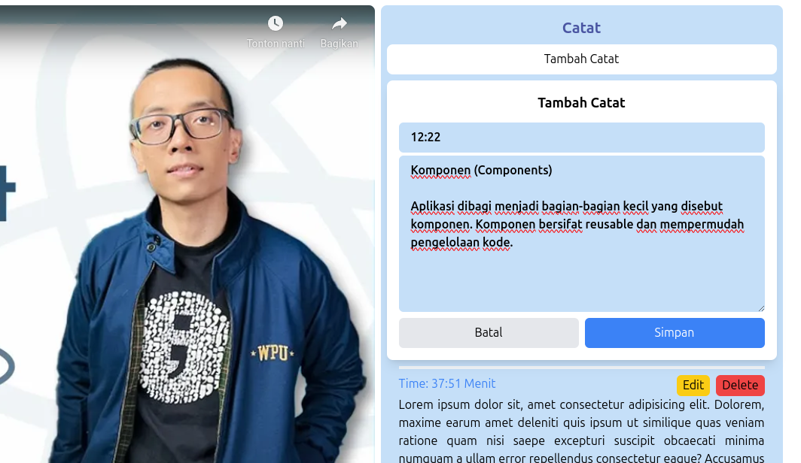
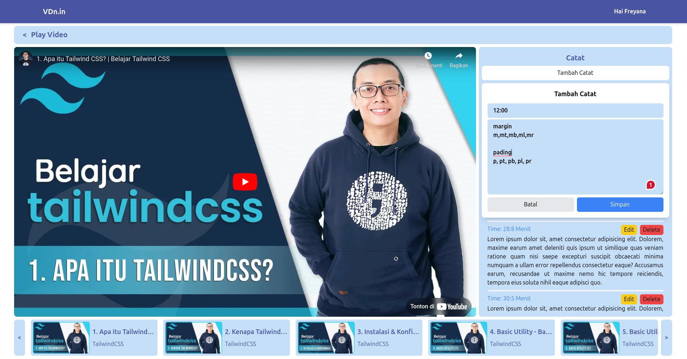
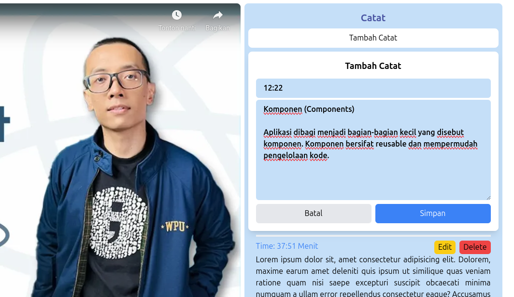
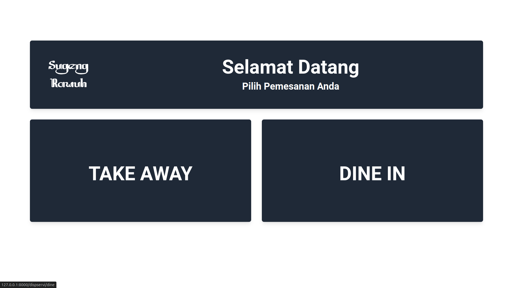
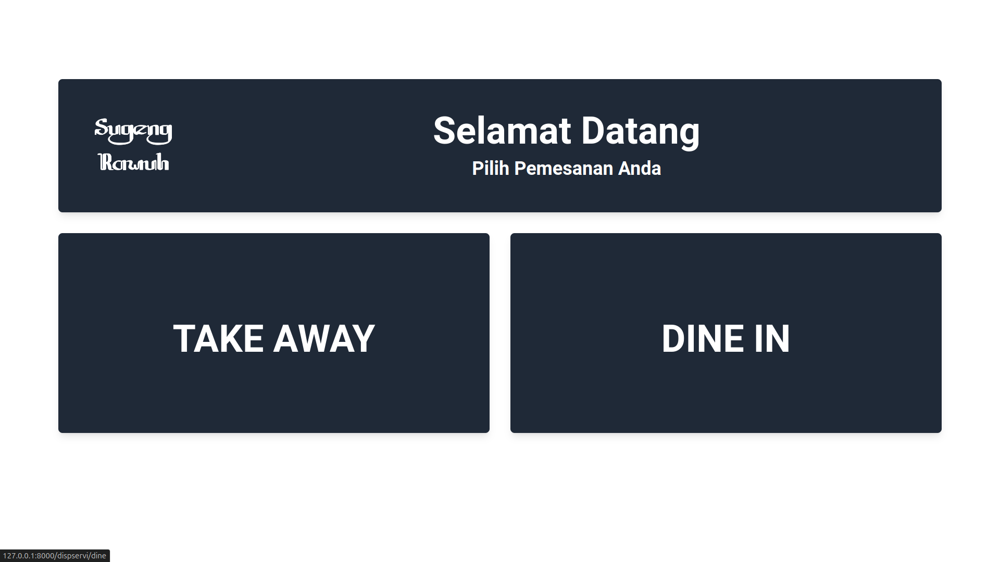

FAISHALBAHY AHMAD FATHUNI | Web Developer
Biodata dan Kontak
| Telp | : 0813-8507-8633 |
| : faisal2017bahi@gmail.com | |
| : in/faishal-fathuni-436b84209 | |
| Github | : https://github.com/Faishal21ahmad |
| Portofolio | : https://ixal.my.id/ |
| Alamat | : Cibitung, Bekasi, Jawa Barat, 17520 |
| Domisil 1 | : Cibitung, Bekasi, Jawa Barat, 17520 |
| Domisil 2 | : Wuryantoro, Wonogiri, Jawa Tengah |
| CV | : Download |
Tentang Saya
lulusan S1 Sistem Informasi dengan keahlian dalam pengembangan web dan pembelajaran mesin. memiliki pengalaman dalam menggunakan teknologi seperti Laravel, Tailwind, Flask, dan Python, yang telah saya terapkan dalam berbagai proyek akademis. Dengan ketertarikan yang kuat untuk mempelajari teknologi baru. memiliki komitmen untuk meingkatkan dan mengembangkan keterampilan teknis saya serta beradaptasi dengan perkembangan industri yang terus berkembang. Saya siap berkontribusi dalam pengembangan solusi berbasis teknologi melalui pendekatan yang inovatif dan efisien.
Pendidikan
Universitas Amikom Yogyakarta - Yogyakarta, Indonesia
S1 - Sistem Informasi, 3.75/4.00
Sep 2020 - Aug 2024
Sertifikat
- (2021) Cisco : IT Essentials
- (2022) Cisco : NGD LINUX Essentials
- (2023) Dicoding : Belajar Dasar Pemrograman Web
- (2023) Dicoding : Belajar Membuat Front-End Web untuk Pemula
- (2024) Dicoding : Belajar Dasar Pemrograman JavaScript
Project List
ATS Asset Tracking System - Full Stack Laravel - 2025
Web Project ATS ( Asset Tracking System ) aplikasi manajemen inventaris untuk melacak, mengelola, dan memantau aset organisasi secara efisien fitur check-in/out, barcode/QR code, pelacakan lokasi, dan pemeliharaan untuk mengoptimalkan kontrol
- Dibangun dengan Laravel & TailwindCSS
- Perancangan Konsep alur, Desain, Database
- Implementasi Perancangan
VDn.id - Full Stack Laravel - 2024
Web Project VDn.in ( Video Note ) platform unik yang dirancang untuk membantu mencatat ide, wawasan, dan materi dari video YouTube.
- Perancangan Konsep, Desain, Database
- Implementasi Perancangan
- Penerapan Framwork Laravel, TailwindCSS
Resampling Data Classification Covid-19 - Machine Learning - 2024
Project penelitian tugas akhir Skripsi, Membahas Tentang Perbandingan kinerja resampling terhadap model klasifikasi pada ketidakseimbangan dataset covid-19 dan ditampilkan dalam bentuk web
- Framework Flask dan TailwindCSS
- Evaluasi Resampling Model Training
- Banding kinerja resampling
- Uji Model Prediksi Pengguna
Sugeng Rawuh - Web Project - 2023
Final project UI/UX: Sistem pemesanan rumah makan berbasis web menggunakan QR Scan & Display Service.
- Dibangun dengan Laravel & TailwindCSS
- Mengembangkan alur pemesanan makanan melalui scan QR
- Membangun front-end Display Service untuk pelanggan
- Mengimplementasikan dashboard admin: pengelolaan menu, pesanan, meja, kategori, metode pembayaran, dan display service
Keterampilan
- HTML
- CSS
- Javascript
- PHP
- Python
- Laravel
- Livewire
- TailwindCSS
- Flask
- CodeIgniter
- Web Dev
- Linux
- Mikrotik
- Network
- Git
- IT Support
- Docker
- AWS
Hobi
- Mengulik Mini Computer (STB Arm)
- Technology Enthusiast
- Mengulik Elektronik
- Fotografi
Project Showcase


ML Resampling Data
Pengujian banding metode resampling dalam mengatasi data yang tidak seimbang
View Details
 




 
